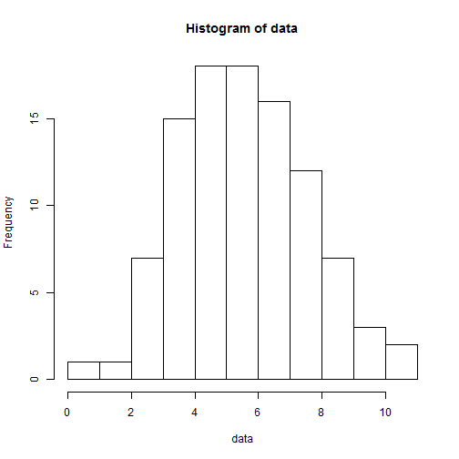

- The application can be found here.
- This application helps one to visualise the Central Limit Theorem through simulating multiple samples of a Binomial distribution, and provides documentation as to how the visualisation works.
- The available parameters to the user are:
- The number of samples.
- The number of observations in each sample.
- The probability of a 'success' draw.
Demonstrating the CLT
via a Binomial Distribution
Kenneth Lim
Student, Coursera
About the Shiny application
How the application works
- Assume the user enters the following parameters in side panel.
input <- list()
input$nsamples <- 5
input$obs <- 20
input$p <- 0.3
- The application uses these values to generate 5 samples, each of 20 observations, with probability of 'success' being 0.3.
nsamples <- input$nsamples # obtain number of samples from ui.R
obs <- input$obs # obtain number of obs from ui.R
p <- input$p # obtain p from ui.R
set.seed(123) # set seed for reproducibility
data <- replicate(nsamples, rbinom(1, obs, p)) # generate data
Application returns a histogram of data generated
hist(data)

Observing the CLT in action
- By increasing the number of samples drawn, the user can observe that the distribution tends towards normality. Shown below is the histogram for nsamples = 100.
